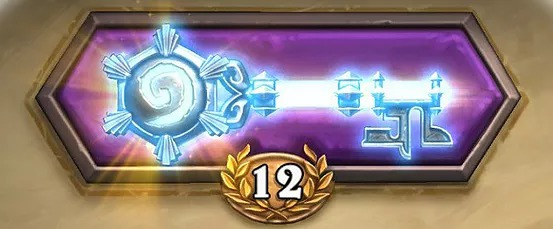
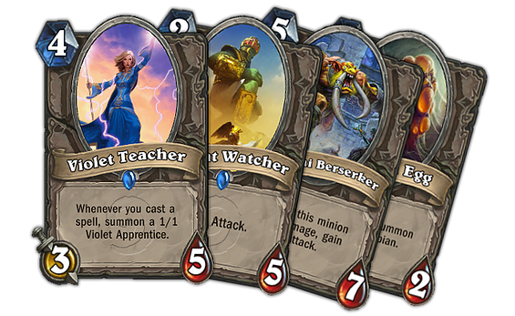
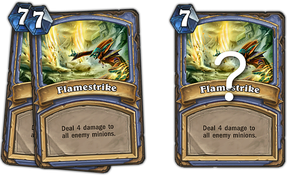

Hearthstone: секреты построения колод на арене
Секреты...
Хватит жить мечтой о двенадцати победах на арене и довольствоваться очередным трем или пяти! Пора действовать! В данной статье мы опишем секреты построения эффективных колод, а также основам ведения боя на арене.
Наверняка, для вас арена - один из самых интересных аспектов игры. Именно на арене вы готовы зубами вгрызаться в победу и делать все, что в ваших силах ради нее. Каждый раз, как я делаю 7 побед, то вздыхаю с облегчением, ведь моя арена окупилась, и это значит, что я могу пойти туда снова.
Но порой бывает очень сложно сделать даже 7 побед. Hearthstone карточная игра, тут всегда присутствует фактор рандома. Бывает и такое, что у вас попросту мало сильных карт, и во время построения колоды, у вас то и дело попадаются одни лишь бесполезные. А иногда, ваша победа предрешена заранее, когда противник оказался в такой ситуации с плохими картами. Тем не менее, всегда надо стремиться сделать 7 побед и это реально абсолютно для любого игрока.
Как я уже сказал, 7 побед окупают золото, которое вы потратили на арену. А это значит, что в следующий раз у вас есть возможность собрать более сильную колоду, которой вы сможете сделать заветные 12 побед. Поиск игроков на арене происходит таким образом, что вас будет бросать к противникам с похожим соотношением побед/поражений. Поэтому, если у вас 11 побед, то не стоит расслабляться, вы попадетесь на такого же противника с таким же количеством побед. И вот тут надо быть действительно уверенным, что ваша колода хороша. Представляем вам четыре самых важных урока для построения могучей колоды на арене.
Урок первый: обеспечение стабильной кривой маны
Самое большое отличие между построением обычных колод от колод на арене - это качество карт. Колоды, которые вы построили заранее (констрактед) определяют ваш стиль игры. Вы можете разыгрывать определенное комбо, сами распределять кривую маны так, как вам нужно и привносить в деку нужные вам изменения. Последовательная кривая маны позволит максимально продуктивно использовать колоду. Например на первом ходу вам есть чем сходить, на втором ходу вы потратили 2 маны, на третьем 3 и так далее. Делая это, вы раскроете максимальный потенциал ваших существ и заклинаний.
Ареновские колоды особенно полагаются на эффективное использование маны, так как вы заранее не можете предугадать какие карты вам попадутся. Например из всех ремувалов у вас присутствует только "Волна огня" в количестве 5 штук, но нету ледяных стрел и фаерболов. Очевидно, что с контролем стола за мага у вас будут проблемы. Это очень нестабильная кривая маны.
Сильные игроки знают, что иногда стоит отказаться от сильной карты в пользу стабилизации кривой маны. Но не стоит забывать, что есть карты, которые обязательно стоит брать (размах, фаербол, духи волков и др). Стоит избегать тех карт, которые незначительно лучше более слабой, но сильно ударяют по кривой мане.
Рассмотрим на простом примере. Вы выбрали на арену друида, стараетесь грамотно соблюдать кривую маны и на выбор выпадает "Зловещий кузнец" за 5 единиц маны. Не самая лучшая карта для друида, но у вас вообще отсутствуют карты за 5 маны, а выбраны уже 27 карт из 30. В таком случае надо брать именно ее. Если вы продолжительное время не можете захватить контроль стола, то скорее всего неуважительно отнеслись к кривой маны. И помните, слабая карта на стабильной кривой практически всегда лучше, чем вообще ничего.
Урок второй: построение колоды не всегда акцентируется на выборе сильных карт. Выбор стиля колоды.
При составлении колоды на арене необходимо прикинуть план игры примерно после 15 пиков карт. Это поможет вам более эффективно выбрать последующие 15.
Например первые 10 карт вы выбрали существ с низким манакостом и это уже повлияло на характер вашей колоды. Допустим, что на следующем пике вам попались "Сквайр авангарда" и "Служитель боли". Тут стоит хорошо подумать, какой план игры вы выбрали. Будете ли вы продолжать составлять агрессивную колоду с дешевыми по мане существами и возьмете сквайра или попытаетесь сделать мидрендж деку и возьмете служителя боли.
В этих случаях нерешительность уменьшает эффективность колоды, а сознательное решение укрепляет ее. Ваш выбор, конечно, полностью зависит от ваших предпочтений, но все-таки стоит лишний раз задуматься. После того как выбор был сделан, придерживайтесь его до конца! Если вы выбрали сквайра, то продолжайте составлять агрессивную колоду, если служителя боли, то пытайтесь сделать деку, которая будет эффективна в середине игры. К счастью, в Hearthstone время для выбора карт не ограничено. Поэтому не торопитесь и выбирайте карты с умом, постоянно прикидывайте стиль игры вашей колодой и придерживайтесь его. Построение колоды на арене не всегда акцентируется на выборе сильных карт, все зависит от выбранного вами стиля игры.
Урок третий: лучшие ареновские колоды не полагаются на синергию
Это может показаться странным, но грамотный выбор карт, которым не нужна еще одна карта для эффективной реализации, это важный фактор при составлении сильной колоды на арене.
Рассмотрим на примере такой карты, как "Учительница магии". Очевидно, что карта призывает играть через заклинания и может быть заманчивой при первых десяти пиках в надежде получить спеллы позже.
Но что, если вам не дадут никаких заклинаний на выбор? Выбрав учительницу магии так рано, вы создали ситуацию, в которой вы очень нуждаетесь в заклинаниях, чтобы оправдать свой выбор. Однако, вы не можете гарантировать, что придут именно они. Если к концу драфта у вас оказалось всего лишь два спелла, то стоит задуматься. А нужен ли был мне пик именно этой карты? Ведь учительница магии это редкая карта и две другие тоже были редкими, и, возможно, стоило рассмотреть какие-то из них?
Неаккуратный драфтер при составлении колоды на арене может создать несколько таких ситуаций. Например может набрать "Древнего дозорного", "нерубское яйцо", "берсерка Гурабаши", существ, которые становятся сильнее от секретов или заклинаний. Старайтесь избегать этого. Но с другой стороны, не всегда карта, которая не нуждается в синергии, чтобы быть хорошей, лучше. Это тот случай, когда две остальные карты при выборе абсолютно бесполезные.
Вернемся к учительнице магии. Ее стоит брать только в том случае, если пик подходит к концу и вы уже взяли, к примеру, 8-9 заклинаний. В этом случае можно сказать, что вам повезло и вы получили сильную синергию.
Урок четвертый: не стоит брать несколько одинаковых карт
Даже самые лучшие карты любого героя могут стать вредными для вашей колоды, если их количество превышает норму. Это не касается ледяной стрелы или агента ШРУ. Эти карты настолько хорошие, что я бы взял их в колоду в количестве восьми или девяти штук.
Тем не мене, волня огня это совсем другой случай. Да, эта карта очень хороша. Возможно, самый сильный аое урон в определенных случаях. При составлении колоды маг, который получил первую волну огня скорее всего вздохнет с облегчением. Похожие эмоции будут и при выборе второй, а вот при выборе третьего стоит хорошенько задуматься. Первая волна огня позволит снять давления со стороны вашего противника, вторая должна полностью расчистить стол (вспоминаем про предсмертные хрипы, толстых таунтов и т.д), а третья? Не эффективна.
Вместо нее лучше разыграть какое-нибудь существо или более дешевое заклинание. Это будет гораздо мудрее с вашей стороны.
Вывод:
Данные уроки это лишь верхушка айсберга необходимых знаний колодостроительства на арене, но, если вы учтете их, это увеличит ваши шансы на победу. Все приходит с опытом. Если вы быстро проиграли 3 игры на арене, не стоит впадать в отчаяние. Постарайтесь извлечь максимальный опыт из этого, проанализируйте свою колоду, свои решения, постарайтесь понять, что именно вы сделали не так. С достаточным упорством вы можете стать Богом Арены! :)
А если ничего не помогает, то берите 3 пиробласта и 27 колец холода. :)
Источник: gosugamers.net